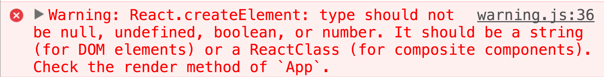
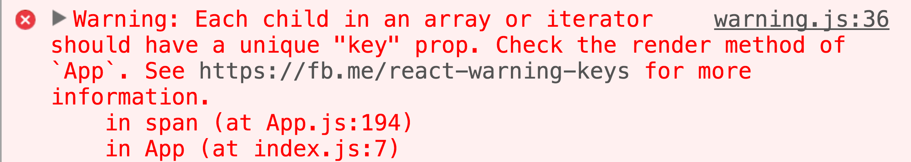
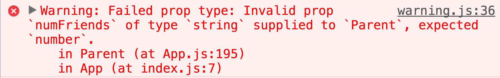
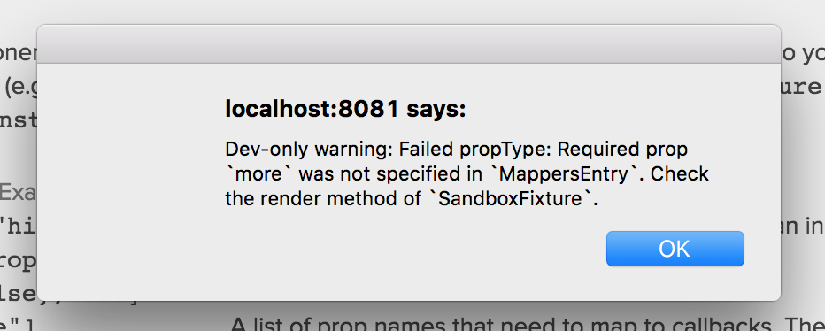

Real World React Debugging
Jared Forsyth


@jaredforsyth
Confidence üòÄ
that you can fix the bugs you find
Serenity üòá
sleep peacefully w/ tools in place to catch bugs
Self esteem üòé
from a codebase that's clean & easy to maintain
@jaredforsyth
Fix bugs ‚õèüêõ
with devtools
Catch bugs üé£üêõ
with linting, types, and tests
Prevent bugs üö´üêõ
with Good Practices™
@jaredforsyth
FatigueFighter™
- üéâ Minimal hassle
- üîß Some hassle
- üõ† Large hassle
@jaredforsyth
Fix bugs
@jaredforsyth
React warnings
(tip: install babel-plugin-transform-react-jsx-source)



@jaredforsyth
Shine a üî¶ into the ‚óºÔ∏è
with React Devtools
- What component is this?
- How is this organized?
- Where's this defined?
- What's the data doing?
- Why is this slow?
@jaredforsyth
Catch bugs
Just add Process™
@jaredforsyth
How do we catch bugs?
- your users üéâ
@jaredforsyth
How do we catch bugs?
- your users üéâ üôÉ
- propTypes üéâüîß
- linting üîßüõ†
- type annotations üîßüõ†
- testing üõ†üõ†
@jaredforsyth
Is it worth it?
üôÉ Our users are great üôÉ
- you have lots of production users that you care about
- several people are touching the code
- you expect to support this code for at least several months
@jaredforsyth
Prop Types üéâ
- documentation that's code
- tests w/ runtime warnings in dev
- much more flexible than types
- no runtime cost in production
@jaredforsyth
Prop Types üéâ
const {cursorContextPropType, keyIdPropType} = require('./prop-types');
const ExpressionKeypad = React.createClass({
propTypes: {
// basic propType
currentPage: React.PropTypes.number.isRequired,
// shared proptype definition, imported from `./prop-types.js`
cursorContext: cursorContextPropType.isRequired,
dynamicJumpOut: React.PropTypes.bool,
// complex prop type, using an imported definition
extraKeys: React.PropTypes.arrayOf(keyIdPropType),
roundTopLeft: React.PropTypes.bool,
roundTopRight: React.PropTypes.bool,
},

@jaredforsyth
Lint all the things üéâüîßüõ†
with eslint
{
"rules": {
// ---------------------------------------
// ES6 and jsx rules.
"arrow-spacing": 2,
"computed-property-spacing": 2,
"constructor-super": 2,
"no-const-assign": 2,
"no-this-before-super": 2,
"no-var": 2,
"prefer-const": 2,
"prefer-spread": 2,
"react/forbid-prop-types": [2, { "forbid": [ "array", "object" ] }],
"react/jsx-closing-bracket-location": [2, "line-aligned"],
"react/jsx-curly-spacing": [2, "never"],
"react/jsx-indent-props": 2,
"react/jsx-no-duplicate-props": 2,
// This triggers a ton on stuff like 'if (window.x) { x(...) }'.
"react/jsx-no-undef": 2,
"react/jsx-sort-prop-types": 2,
"react/jsx-uses-react": 2,
// (Maybe we can be more strict and not need allow-in-func?)
"react/no-did-mount-set-state": [2, "allow-in-func"],
"react/no-did-update-set-state": 2,
"react/no-direct-mutation-state": 2,
"react/prop-types": 2,
"react/self-closing-comp": 2,
"react/sort-comp": 2,
// ---------------------------------------
// ES6/jsx stuff we explicitly disable.
// We turned this off since it was too much work for too
// little benefit, especially for one-line props.
"react/jsx-sort-props": 0,
// We turned this off because it complains when you have a
// multi-line string, which I think is going too far.
"prefer-template": 0,
// We've decided explicitly not to care about this.
"arrow-parens": 0,
"prefer-arrow-callback": 0
},
"ecmaFeatures": {
"arrowFunctions": true,
"blockBindings": true,
"classes": true,
"destructuring": true,
"experimentalObjectRestSpread": true,
"forOf": true,
"jsx": true,
"restParams": true,
"spread": true,
"templateStrings": true
},
"plugins": [
"react"
],
"env": {
"node": true,
"browser": true,
"es6": true
},
"extends": "./eslintrc.shared"
}
@jaredforsyth
Linting typos üéâ
- no-undef, react/jsx-no-undef üéâ
- no-dupe-keys,
react/jsx-no-duplicate-props üéâ
@jaredforsyth
lint: no-undef üéâ
Catching simple mistakes
import React from 'react'
const NoUndef = React.createClass({
render() {
return <Component /> // Oops, forgot to import!
}
})
@jaredforsyth
lint: no-duplicate-props üéâ
Catching simple mistakes
<SomeComponent
height={200}
items={theItems}
width={500}
profileUrl={this.props.profileUrl}
showHeader={false}
items={null}
responsive={this.props.flags.responsive}
/>
@jaredforsyth
Linting PropTypes üîßüõ†
- react/prop-types üîß
- react/forbid-prop-types üõ†
@jaredforsyth
Type annotations
Flow or TypeScript
@jaredforsyth
Type annotations
What bugs will they catch?
- calling a fn with the wrong args
- accessing a property that doesn't exist
- "x is not a function"
- data has the wrong "shape"
@jaredforsyth
Automated testing
@jaredforsyth
What does testing give us?
- verify complex behavior
- prevent regressions
@jaredforsyth
Verify complex behavior
const myComplexFunction = require('../lib/my-complex-function');
// better make sure we cover these edge cases
assert.equals(myComplexFunction({edge: true}), 100);
assert.equals(myComplexFunction({edge: false}), 10);
assert.equals(myComplexFunction({edge: false, corner: true}), 780);
complex logic doesn't belong in components
put it in a pure function!
@jaredforsyth
Prevent regressions
// we better render that signup button
assert.exists($('#signup'));
assert.isFunction($('#signup').onclick);
// ... ad nausium
@jaredforsyth
Automated Testing
prevent regressions with less hassle
- Fixtures üõ†
- Jest Snapshot tests üõ†
- Visual regression tests üõ†
@jaredforsyth
Fixtures üõ†
@jaredforsyth
Fixtures üõ†
@jaredforsyth
Fixtures üõ†
// exercise-progress-phone-ui.jsx.fixture.js
module.exports = {
instances: [{
"attempts": [
{
"correct": true,
"seenHint": false,
"timeDone": "2015-12-01"
},
{
"correct": false,
"seenHint": false,
"timeDone": "2015-12-01"
}
],
"isSkillCheck": true,
"criterion": {
"type": "num_problems",
"numRequired": 10
},
"answerStatus": "correct"
}, ...]
}
@jaredforsyth
Jest snapshot tests üõ†
// signup-page-test.js
import renderer from 'react-test-renderer';
test('Signup page renders correctly', () => {
const tree = renderer.create(
<SignUpPage />
).toJSON();
expect(tree).toMatchSnapshot();
});
⬇
<!-- signup-page-test.js.snap -->
<div
className="SignUpPage"
onClick={[Function]}
>
<input
placeholder="Name"
...
/>
...
<button
onClick={[Function]}
>
Sign up!
</button>
</div>
@jaredforsyth
Jest snapshot tests üõ†
- implement a feature
- run jest before submitting for review
- expected
+ actual
<div
className="SignUpPage"
onClick={[Function]}
>
+ <div>
+ My new feature thing
+ ...
+ </div>
<input
placeholder="Name"
...
/>
...
- <button
- onClick={[Function]}
- >
- Sign up!
- </button>
</div>
⬅ yup, we added this
⬅ oops!
@jaredforsyth
Jest snapshot tests üõ†
- implement a feature
- run jest before submitting for review
- commit new snapshot file
@jaredforsyth
Visual regression tests üõ†
- compare images instead of HTML
- üòÄ catch css bugs!
- üòü can be finnicky


@jaredforsyth
Prevent Bugs
with Good Practices™
- State management üéâ
- Logic // presentation üéâ
@jaredforsyth
"Figuring out where state should live is one of the hard problems of UI"
- me
@jaredforsyth
State Management
- One owner
- Least Common Ancestor
- Embrace the tree
handleClick() {
this.setState({clicked: true});
},
render() {
return <div style={...}>
<button onClick={this.handleClick}>
click me
</button>
</div>
}
...
handleClick() {
this.setState({clicked: true});
this.props.onClick();
},
...
If a parent needs to know about it, the parent should own it.
@jaredforsyth
State Management
- One owner
- Least Common Ancestor
- Embrace the tree
...
getClickedState() {
return this.refs.child.hasBeenClicked();
},
...
If a parent needs to know about it, the parent should own it.
@jaredforsyth
Decouple logic from presentation
@jaredforsyth
React Devtools to fix bugs
Linting & Tests to catch bugs
Best Practices to avoid bugs
Jared Forsyth
@jaredforsyth
FIN
@jaredforsyth